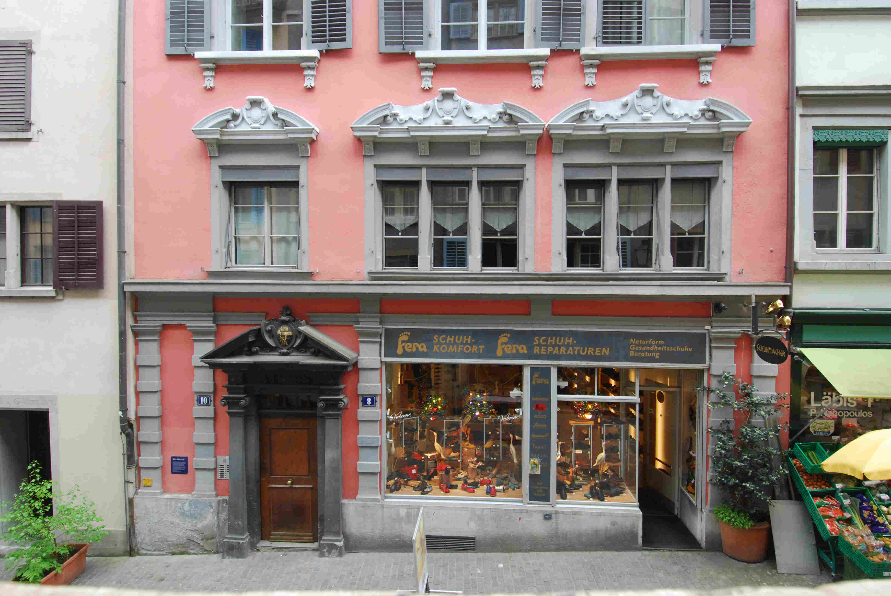
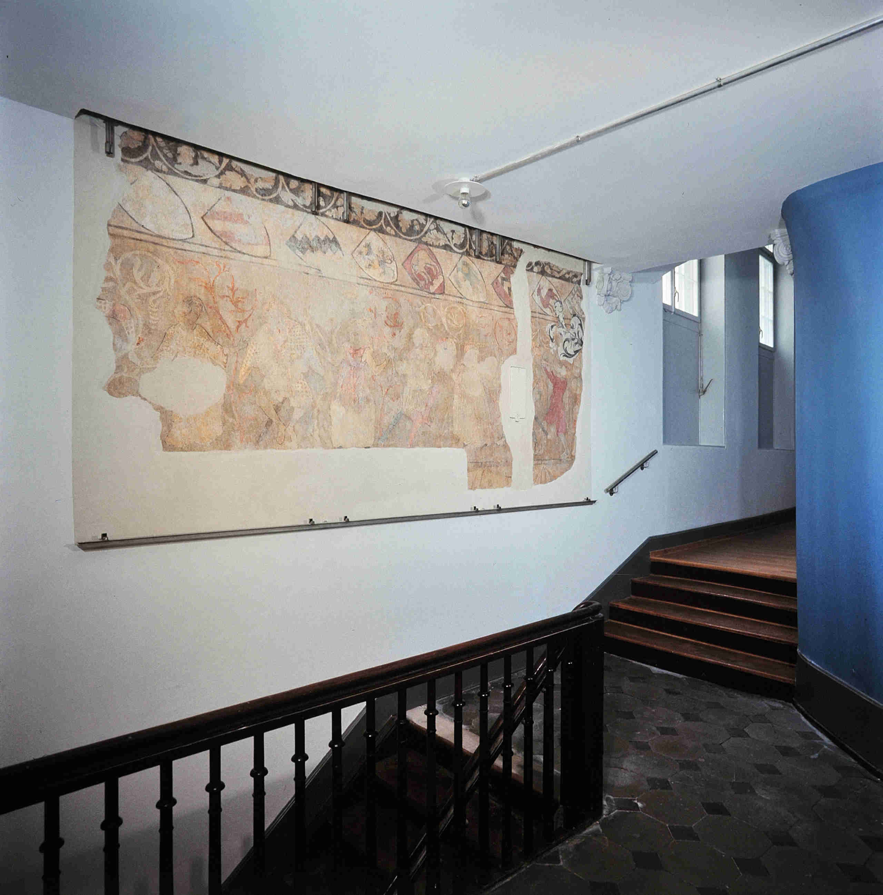
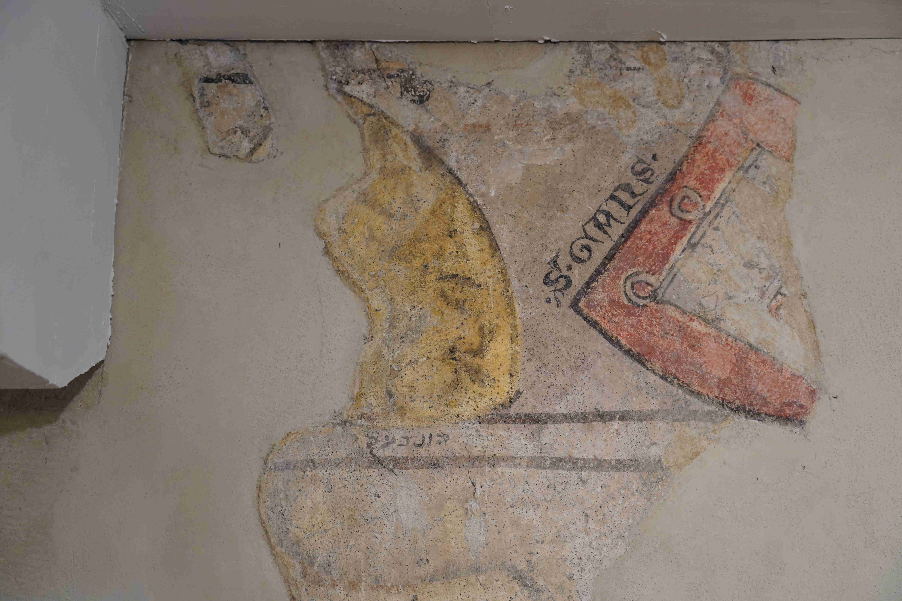
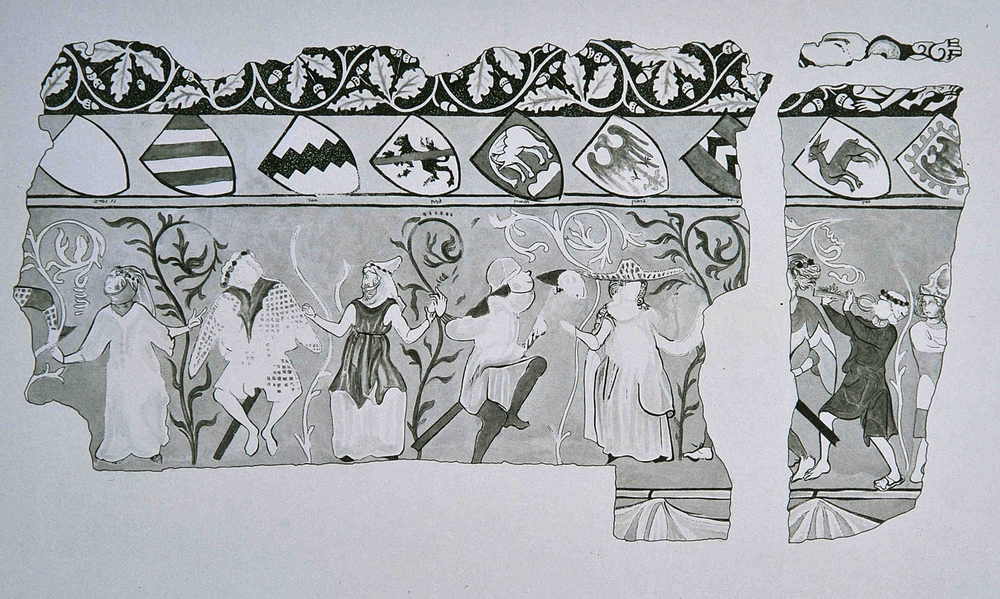
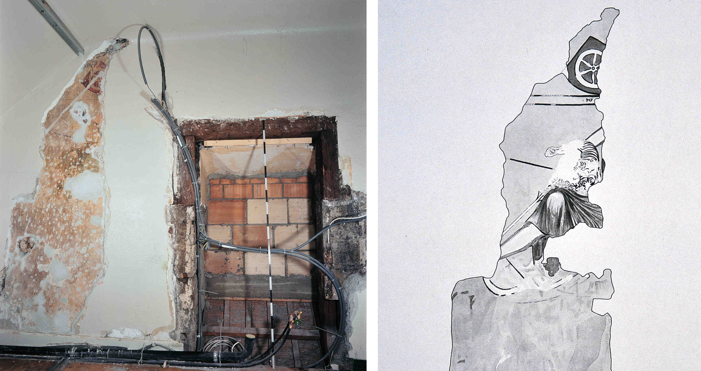
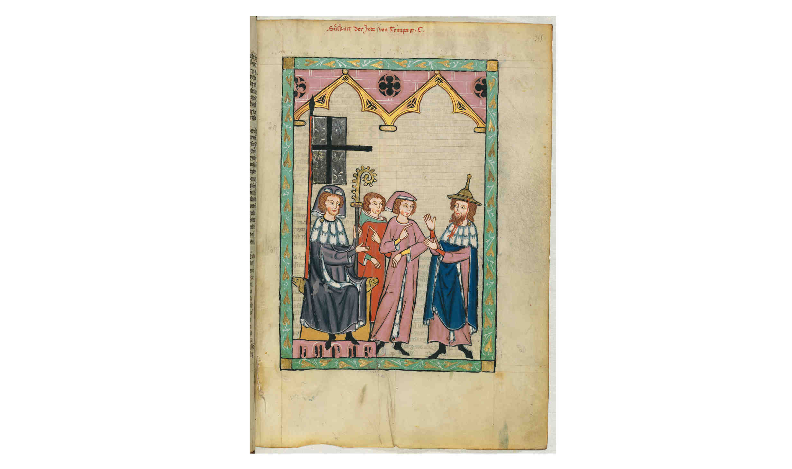

Unscheinbar steht das Gebäude in einer Häuserzeile inmitten der Zürcher Altstadt. Es ist weder Zunfthaus noch Kirche, sondern ein gewöhnliches Wohnhaus – sofern es das in der Altstadt überhaupt gibt. Denn die Häuser in diesem Quartier sind nicht wie jene in den übrigen Stadtquartieren von einer Hand geplant und gebaut. Viele dieser Gebäude reichen in den älteren Teilen bis ins Hochmittelalter zurück und jede folgende Generation hat an ihnen weitergebaut, hat beseitigt, was dem Neuen im Weg stand, aber auch belassen, was nicht weiter störte. So besteht auch das Haus Brunngasse 8 aus Teilen, die sehr jung sind, andere reichen Jahrhunderte zurück und sie alle fügen sich wie die Stücke eines Puzzles unmittelbar ineinander.
Zürich, Brunngasse 8. Ehemaliger Saal auf der gesamten Hausbreite im ersten Obergeschoss. Zur Zeit der Aufnahme lebte dort die Schriftstellerin Silvana Lattmann (1918–2023). (Bild: Stadtarchäologie Zürich, 2015)
Ein fast gewöhnliches Altstadthaus
Das Haus Brunngasse 8, in dem sich das kleine Museum «Schauplatz Brunngasse» befindet, betritt man über eine schwere Aussentüre, durch welche auch die Bewohnerinnen und Bewohner des Hauses zu ihren Wohnungen gelangen. Die Wandmalereien befinden sich heute im Treppenhaus des ersten Stocks und in einer anschliessenden Wohnung. Einst waren sie hier Teil eines grossen Saales. Das Museum «Schauplatz Brunngasse», welches zum Ziel hat, diese Wandmalereien und ihre Geschichte zu vermitteln, entstand 2020. «Schauplatz» heisst es, weil es der originale Ort ist, an dem sich diese Geschichte ereignet hat.
Die Malereifragmente auf der Ostwand des ehemaligen Saales, durch neuzeitliche Eingriffe nun im Treppenhaus. Vier Stufen führen zur schmalen Passage ins neuzeitliche Hinterhaus. Zuvor wird sich hier ein Fenster des Saales befunden haben. (Bild: Stadtarchäologie Zürich, 1996)
Ein Saal für Feste und Geschäfte
Entdeckt wurde die Wandmalerei 1996 bei der Renovation der städtischen
Liegenschaft und sie datiert in die Jahre um 1330. Damit ist klar, dass
sie aus einer Zeit stammt, während der sich das Haus im Besitz einer
jüdischen Familie befand. In mehreren erhaltenen Urkunden werden eine
«Frau Minne» und ihre beiden Söhne Moses und Mordechai ben Menachem
genannt. Dass diese Juden die Auftraggeber der Malerei gewesen sind,
macht diesen Fund einzigartig. Vergleichsbeispiele gibt es keine, weder
im profanen noch im religiösen Bereich. Verwandt sind sie nur mit der
reichen jüdischen Buchmalerei jener Zeit.
Überraschend waren auch die auf den Wänden zum Vorschein gekommenen
Motive – Wappen des deutschen Hochadels und Szenen höfischen Lebens.
Deutlich zeigte sich hier die Verwandtschaft mit den Bildern in der
‹Manessischen Liederhandschrift› (Codex Manesse), jener
berühmten, zur gleichen Zeit in Zürich entstandenen Sammlung von Werken
deutschsprachiger Minnesänger. Die Wahl dieser Motive belegt eine
eindrückliche Offenheit der jüdischen Auftraggeber:innen im Umgang mit
ihrer Umgebungskultur.
Vornehme Beziehungen, gelehrtes Wirken und bedrohte Existenz
Frau Minne und ihre beiden Söhne Moses und Mordechai ben Menachem sind
urkundlich ab den 1320er Jahren belegt. Die Familie war wohl
hauptsächlich als Kreditgeberin tätig, eine Bedingung des damaligen
Zürcher Rats für Juden, die sich in Zürich niederlassen wollten. Dies
war eine allgemein übliche Praxis, da Christinnen und Christen
Zinsgeschäfte verboten waren.
Moses ben Menachem betätigte sich zudem als Rabbi und er gilt als Autor
des Zürcher «Semak», einer bis heute in der jüdischen Orthodoxie
bekannten Sammlung von Kommentaren des Talmuds. «Semak» ist ein Akronym
für «Sefer Mizwot Katan», auf Deutsch «Kleines Buch der Gebote».
Nach Ausbruch der europaweiten Pest-Pandemie der Jahre 1347 bis 1353
wurden die Juden in vielen Ländern als Verursacher beschuldigt und
verfolgt. Auch in Zürich gerieten sie unter Verdacht, mittels
Brunnenvergiftung den Ausbruch der Seuche verursachen zu wollen. Am 23.
Februar 1349 wurden alle Männer der Gemeinde auf dem Scheiterhaufen
ermordet, ihre Frauen und Kinder aus der Stadt vertrieben.
Wandmalerei als mittelalterliche Repräsentationskultur
Wandmalereien waren ein beliebtes Mittel wohlhabender Adeliger und
reicher Bürgerinnen und Bürger, ihre Zugehörigkeit zur gehobenen
Gesellschaftsschicht zu zeigen.
Die Wände des Saales an der Brunngasse waren ursprünglich wohl
vollflächig bemalt. Oben wird die Malerei von einem umlaufenden
Pflanzenfries begrenzt und der unterste Teil der Wand wird von einer
Stoffdraperie eingenommen. Dazwischen befinden sich ein auffälliger
Wappenfries und die grossflächige Bildzone.
Der Wappenfries und seine hebräischen Schriftzeichen
Die Wappenschilde dürften als Kranz den ganzen Saal umlaufend geschmückt haben. Unter jedem dieser Wappen befindet sich eine feine hebräische Beschriftung in einer Kursivschrift des Alltags, welche von mindestens drei Personen ausgeführt worden ist.
Die Wappen der Grafen von Sargans (rechts) und Homberg (links). Unter Letzterem die hebräische Beschriftung des Wappens. Das Wappen der Sargans mit gotischer Beschriftung. (Bild: Dölf Wild, 2024)
Bei sieben Wappen ist zudem eine gotische Beschriftung erhalten, welche
diese Wappen auszeichnen. Sowohl die hebräische wie die gotische
Beschriftung nennen die Inhaber des jeweiligen Wappens.
Erhalten haben sich Wappen des regionalen und überregionalen Hochadels,
darunter einige sehr bedeutende, wie dasjenige der Grafen von Luxemburg,
damals eines der wichtigsten Geschlechter im Reich, das wiederholt auch
den König oder Kaiser stellte. Dieses Wappen der Luxemburger steht im
Zentrum jener sieben, welche durch die gotische Schrift herausgehoben
wurden. Wappen sind ein häufiges Motiv damaliger Wandmalereien, ihre
Darstellung war eine eigentliche Mode. Dennoch erstaunt das hier
gezeigte gesellschaftliche Niveau der gewählten Geschlechter. Es zeugt
von einem hohen Anspruch der Auftraggeber. Vielleicht hatten sie mit
einigen von ihnen geschäftliche Beziehungen? Bekannt sind grosse Summen,
welche die Familie dem Abt von Einsiedeln, dem Grafen von Rapperswil und
dem Rat von Zürich geliehen hat.
Westwand. In der Mitte das Wappen der Grafen von Luxemburg, soweit bekannt das bedeutendste im Saal. Hebräische und gotische Beschriftung. Links (Hohen-)Zollern, rechts Kyburg. (Bild: Dölf Wild, 2024)
Eine chemisch-physikalische Untersuchung, vorgenommen bei der Entdeckung 1996, hat wichtige Einblicke in den Entstehungsprozess der Malerei ergeben. Auf den noch feuchten Verputz wurde zuerst die Einteilung mit horizontalen Linien, die Umrisse der Wappen und auch die hebräische Beschriftung unter den Wappen aufgetragen. Die Ausmalung und die Ausführung der Bildzonen folgten etwas später auf den bereits angetrockneten Verputz. Die hebräischen Buchstaben gehören also zur Vorzeichnung der Malerei. Sie bestimmen den Namen und die Lage des mit dem jeweiligen Geschlecht verbundenen Wappens. Damit ist auch belegt, dass die jüdische Familie Auftraggeberin der Malereien gewesen ist.
Auf der Ostwand ein Reigentanz
Auf der ehemaligen Ostwand des Saales sind drei Männer und drei Frauen
in für die damalige Zeit auffällig modischen Kleidern in einem
Reigentanz dargestellt. Während sich die Frauen vornehm zurückhaltend
bewegen, hüpfen die Männer exaltiert umher und tragen dazu (beim Tanz!)
noch Schwerter. Kein Adeliger würde sich so benehmen! Dargestellt wird
ein «Bauerntanz», wie ihn der im Mittelalter populäre Dichter Neidhart
(um 1180–1245) als Parodie geschildert hat. Derbe Bauern sind zu Geld
gekommen und wollen nun auch Teil der höfischen Kultur sein. Deshalb
tragen sie Schwerter, ein wichtiges Attribut des Ritters, und üben sich
in höfischem Tanz. Den Bauern fehlt jedoch das höfische Benehmen, sie
bleiben «Bauerntölpel». Allerdings scheinen sich die adeligen Damen auf
ihr Werben einzulassen.
Die ständische Gesellschaft befand sich im späteren Mittelalter
zunehmend im Umbruch. Die Bauern oder in den Städten die Bürger waren zu
Geld und Einfluss gekommen. In den Augen des Adels blieben sie
lächerliche «Emporkömmlinge».
Ostwand, Malereifragment mit Tanzszene. (Bild: Stadtarchäologie Zürich, 1996)
Umzeichnung der Malerei auf der Ostwand. (Umzeichnung: Stadtarchäologie Zürich, Beat Scheffold)
Eine Falkenjagd auf der Westwand
Eine vornehme Dame sitzt auf einem ruhig schreitenden Pferd. Sie ist mit
einem Greifvogel auf der Jagd und streckt ihren linken Arm mit dem
Falkner-Handschuh in die Höhe. Ein junger Mann mit struppigem Haar
reitet in gestrecktem Galopp von der Dame weg. Seinen rechten Arm hat er
nach hinten zur Falknerin ausgestreckt und schwingt damit sein
«Federspiel», ein an einem Riemen befestigtes Federbüschel. Es ist dies
ein in der Falknerei übliches Utensil, um den Vogel anzulocken. Der
Vogel fliegt von der Dame zum wegreitenden Mann. Der Reiter scheint den
Vogel von der Falknerin wegzulocken, ihn zu entführen.
Die Jagd war im Mittelalter ein Privileg des Adels und die Jagd mit dem
Greifvogel ihre Königsdisziplin. Die Falknerei hat eine hohe symbolische
Bedeutung und findet oft als Metapher für die Liebe oder das Regieren
Verwendung. Das Abrichten des wilden Vogels erfordert viel Zeit und
Sorgfalt. Und nie ist der Falkner davor gefeit, sein Tier zu verlieren,
sei es durch den Freiheitsdrang des Vogels, einer Verletzung im Kampf
mit einem Beutetier oder einer Entführung und des Diebstahls.
Links: Die Szene mit der Falknerin auf der Westwand des Saales. (Bild:
Stadtarchäologie Zürich, 1996)
Rechts: Umzeichnung Westwand, Szene mit der Falknerin. (Umzeichnung:
Stadtarchäologie Zürich, Beat Scheffold, 1996)
Der biblische Esau auf der Südwand?
Auf der Südwand des ehemaligen Saals ist ein Bogenschütze erkennbar, bei dem Indizien dafürsprechen, dass es sich um die Figur des Esau aus dem ersten Buch Mose handelt. Esau war Jäger und wurde von seinem Zwillingsbruder Jakob um das Recht des Erstgeborenen und um den Segen des Vaters gebracht. In der Folge avancierte Jakob zum Stammvater der zwölf Stämme Israels. Esau dagegen ging in die Fremde und wurde von den Israeliten fortan als Bedrohung und Feind wahrgenommen. Und er blieb auch in der Diaspora für Jüdinnen und Juden bedeutsam. Der Name «Esau» wurde für sie zu einer Metapher für die Bedrohung durch die sie umgebenden Mehrheitskultur.

Links: Südwand. Das Fragment des Esau bei der Freilegung. Rechts ein
zugemauerter Durchgang in einen Nachbarraum. (Bild: Stadtarchäologie
Zürich, 1996)
Rechts: Malereifragment auf der Südwand des Saales mit Esau als Jäger.
Unter anderem die rötliche und behaarte Haut sind Merkmale von Esau.
Oben das Wappen des Erzbischofs von Mainz. (Umzeichnung:
Stadtarchäologie Zürich, Beat Scheffold, 1996)
Die zwei Lesarten der Malerei
Christliche Besuchende sahen in den Malereien dieses Saales bekannte und beliebte Motive aus der höfischen Kultur, welche auch von wohlhabenden Bürgern geschätzt wurden. Man konnte sich gemeinsam daran erfreuen. Für jüdische Betrachtende dürfte sich dahinter noch eine andere Deutung verborgen haben: Die Motive von Esau, Bauerntanz und bestohlener Falknerin können eine versteckte Warnung des gelehrten Rabbis gewesen sein, sich als Jude nicht zu sehr auf die verführerische Umwelt einzulassen. «Adelig» wäre in dieser Lesart der nach den halachischen Gesetzen des Talmuds lebende Jude.
In der Manessischen Liederhandschrift findet sich unter den 137 Autorenbildern neben Königen, Grafen und Rittern mit Süsskind von Trimberg auch ein Jude. Auf Augenhöhe debattiert dieser mit einem Bischof. Das Bild ist in Zürich entstanden und der Maler könnte den Rabbi Moses ben Menachem von der Brunngasse vor Augen gehabt haben. (Universitätsbibliothek Heidelberg, Codex Manesse, Cod. Pal. Germ. 848, fol. 355r)
Zwei mittelalterliche jüdische Gemeinden
Jüdinnen und Juden sind in Zürich seit 1250 nachgewiesen. Eine erste
Gemeinde existierte bis zu ihrem Untergang in den Verfolgungen von 1349.
Über sie ist wenig bekannt. Nur Frau Minne und ihre beiden Söhne sind
prominent in den Quellen vertreten. Nach dem gewaltsamen Untergang der
ersten Gemeinde liessen sich bereits ab 1354 wieder Jüdinnen und Juden
in Zürich nieder. Auch diese zweite Gemeinde war klein, vermutet werden
etwa 25 Familien mit insgesamt wohl rund 100 Personen. 1436 wurden die
Jüdinnen und Juden definitiv aus Zürich weggewiesen.
Erst 1862 erhielten sie in der Stadt Zürich die rechtliche
Gleichstellung und es kam zur Gründung der heutigen Gemeinden. Und so
erinnert das unscheinbare Haus an der Brunngasse 8 daran, dass es trotz
aller Katastrophen auch im Mittelalter Phasen einvernehmlichen
Zusammenlebens zwischen Juden und Christen gegeben hat.
Dölf Wild ist Historiker und Archäologe und war Leiter der Stadtarchäologie Zürich. 1996 hat er mit seinen Mitarbeiter:innen diese Malereien anlässlich eines Umbaus der Liegenschaft entdeckt. Heute ist er freischaffender Historiker und Vorstandsmitglied des Vereins Schauplatz Brunngasse.
Weitere Artikel von {{ author.author }} finden Sie hier:
Zur Vertiefung:
- Rotach Brigitta, Wild Dölf, Epstein-Mil Ron, Landau Ehud (Hg.). Frau Minne und die Zürcher Juden. Die mittelterlichen Wandmalereien an der Brunngasse und ihr Kontext, Zürich 2024.
- Wild Dölf, Böhmer Roland: «Die spätmittelalterlichen Wandmalereien im Haus ‹Zum Brunnenhof› in Zürich und ihre jüdischen Auftraggeber», in: Zürcher Denkmalpflege, Stadt Zürich, Bericht 1995/96, Zürich 1997, 15–33 und 122–125.
- Bär Ulrich, Siegel Monique R. (Hg.): Geschichte der Juden im Kanton Zürich, Zürich 2005.
- Codex Manesse: Grosse Heidelberger Liederhandschrift. Universitätsbibliothek Heidelberg, Cod. Pal. Germ. 848, verfügbar unter: Universitätsbibliothek Heidelberg, Cod. Pal. germ. 848 (27.05.2024).
- Voetz Lothar: Der Codex Manesse: Die berühmteste Liederhandschrift des Mittelalters, Darmstadt 2015.
- Shalev-Eyni Sarit: Jews among Christians. Hebrew Book Illumination from Lake Constance, London/Turnhout 2010.
- Shatzmiller Joseph : Cultural Exchange. Jews, Christians, and Art in the Medieval Marketplace. Princeton 2013. Vgl. 61–73: The Decorated Home of the Rabbi of Zurich.